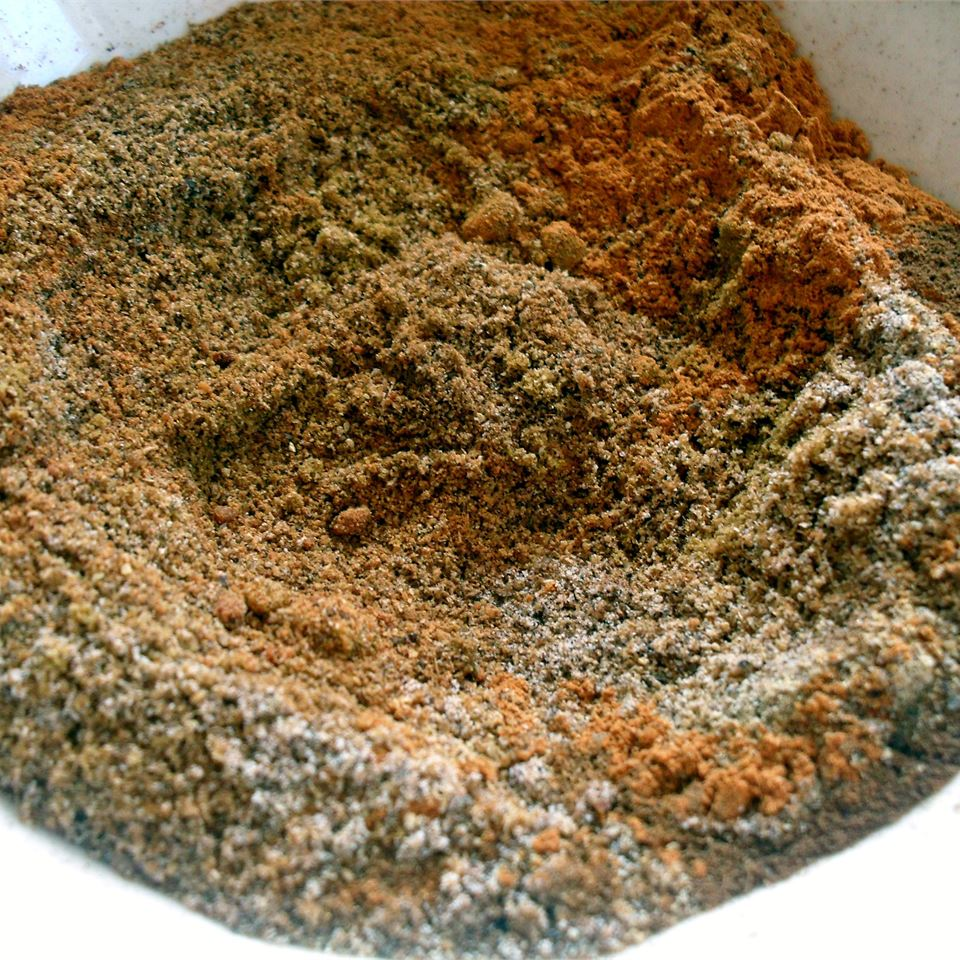
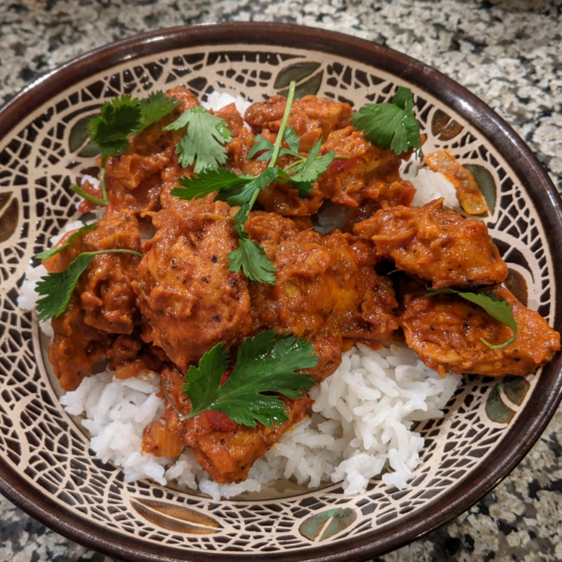
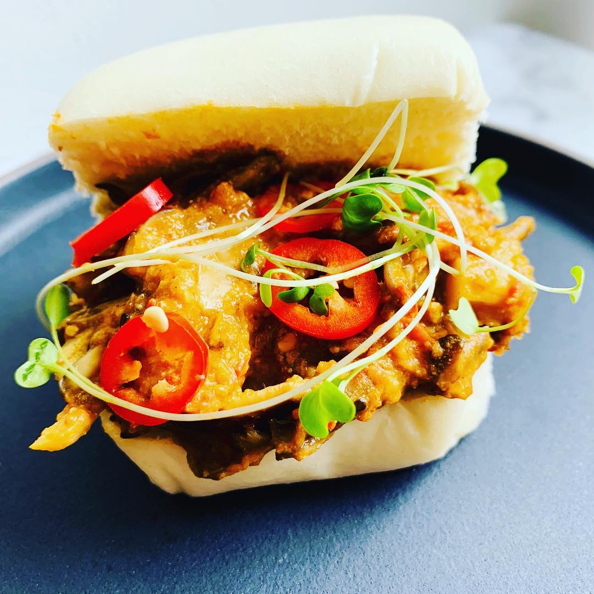

First things first, we will need to make a spice mix - what is known as Garam Massala.
This can then be added to a variety of dishes
Garam Massala Spice Mix

1 tablespoon of Ground Cumin
1.5 teaspoons of Ground Coriander
1.5 teaspoons of Ground Cardamon
1.5 teaspoons of Ground Black Pepper
1 teaspoon of Ground Cinnamon
0.5 teaspoon of Ground Cloves
0.5 teaspoon of Ground Nutmeg
Steps to Follow
Roast individual spices slightly to release aroma
Grind
Mix
Add to any Massala recipe
Chicken Option

Ingredients
0.25 cup plain yogurt
2 teaspoons garam masala
2 teaspoons paprika
0.5 teaspoon freshly ground black pepper
0.5 teaspoon salt
0.5 teaspoon of cayenne pepper
0.5 teaspoon ground coriander
1 pound skinless, boneless chicken breast - cut into 1-inch strips
3 tablespoons vegetable oil
1 teaspoon cumin seeds
1 large onion, chopped
3 cloves garlic, minced
1 tablespoon grated fresh ginger
2 green chile peppers, mince
2 Roma tomatoes, diced
0.5cup tomato paste
0.25 cup water
1 teaspoon garam masala
0.5 teaspoon ground turmeric
0.5 cup heavy whipping cream
0.5 teaspoon salt, adjust for taste
0.5 bunch cilantro for garnish
Steps to Follow
Combine yogurt, 2 teaspoons garam masala, paprika, black pepper, 1/2 teaspoon salt,
cayenne pepper, and 1/2 teaspoon coriander in a large bowl. Add chicken strips and toss
to coat. Cover and marinate in the refrigerator for 2 hours.
Preheat oven to 230 C degrees. Grease a baking sheet.
Place chicken strips on the prepared baking sheet, leaving space between each piece,
and bake in the preheated oven until browned and no longer pink inside,
about 10 minutes. Remove and set aside.
Heat vegetable oil in a large skillet over medium heat. Cook and stir cumin seeds until lightly toasted and aromatic, about 3 minutes. Add onion; cook and stir until onion begins to soften, 4 to 5 minutes. Stir in garlic, ginger, and green chiles and continue to cook until onion is browned, 15 to 20 minutes. Cook and stir tomatoes, tomato paste, and water into onion mixture until tomatoes begin to break down and incorporate into the onion mixture, about 10 minutes.
Cook and stir 1 teaspoon garam masala, 1/2 teaspoon coriander, and turmeric into the tomato mixture. Mix in the cooked chicken, add cream, and stir to coat. Cover and let simmer for 10 minutes. Season with 1/2 teaspoon salt and garnish with cilantro.
Vegetarian Option

What you need?
0.5 cup chopped tomato
0.5 medium onion, minced
2 cloves garlic, chopped
1 (1cm) piece fresh ginger, peeled and chopped
2 tablespoons cashews
1.5 tablespoons oil
1 (2.5cm) piece cinnamon stick
2 pods cardamom
1 bay leaf
1 teaspoon garam masala
0.5 teaspoon smoked paprika
0.25 teaspoon salt
1.5 cups Mushrooms, raw
0.5 cup water
0.5 cup coconut milk
Instructions
Blend tomato, onion, garlic, ginger, and cashews in a food processor until smooth
Heat oil in a pan over medium heat. Add cinnamon stick, cardamom pods, and bay leaf; cook until oil is infused, 2 to 3 minutes. Remove and discard cinnamon, cardamom, and bay leaf. Add tomato mixture (masala) and cook down, 1 to 2 minutes. Stir in garam masala, paprika, and salt.
Mix in mushrooms and cook for 5 to 7 minutes; if mixture gets too thick, add water. Add coconut milk and cook until heated through, 2 to 3 minutes.